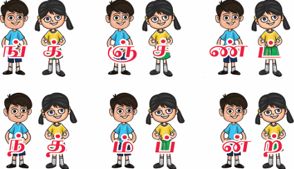
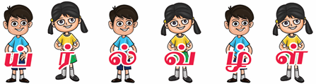
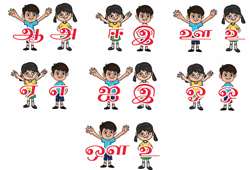
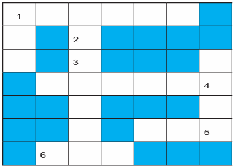

சில எழுத்துக்களுக்கு இடையே ஒலிக்கும் முயற்சி பிறக்கும் இடம் ஆகியவற்றில் ஒற்றுமை உண்டு. இவ்வாறு ஒற்றுமை உள்ள எழுத்துகள் இன எழுத்துகள் எனப்படும். ஆறு வல்லின மெய் எழுத்துகளுக்கும் ஆறு மெல்லின எழுத்துகளும் இன எழுத்துகள் ஆகும். சொற்களில் மெல்லின மெய் எழுத்தை அடுத்துப் பெரும்பாலும் அதன் இனமாகிய வல்லின எழுத்து வரும்.

எடுத்துக்காட்டு, திங்கள், மஞ்சள் மண்டபம், சந்தனம், அம்பு, தென்றல்

இடையின எழுத்துகள் ஆறும் இய், இர், இல், இவ், இழ், இள் ஒரே இனமாகும்.
மெய்யெழுத்துகளைப் போலவே உயிர் எழுத்துகளிலும் இன எழுத்துகள் உண்டு. உயிர் எழுத்துகளில் குறிலுக்கு நெடிலும், நெடிலுக்குக் குறிலும் இன எழுத்துகள் ஆகும். குறில் எழுத்து இல்லாத ஐ என்னும் எழுத்துக்கு இ என்பது இன எழுத்தாகும். அவ் என்னும் எழுத்துக்கு உ என்பது இன எழுத்தாகும். சொல்லில் உயிர் எழுத்துகள் சேர்ந்து வருவது இல்லை. அளபெடையில் மட்டும் நெடிலைத் தொடர்ந்து அதன் இனமாகிய குறில் எழுத்து சேர்ந்து வரும்.
எடுத்துக்காட்டு, ஓஒதல், தூஉம், தழீஇ

தமிழ் எழுத்துகளில் ஆய்த எழுத்துக்கு மட்டுமே இன எழுத்து இல்லை.
பாடலில் இடம்பெற்றுள்ள இன எழுத்துச் சொற்களை எடுத்து எழுதுக.
தங்கப் பாப்பா வந்தாளே
சிங்கப் பொம்மை தந்தாளே
பஞ்சு போன்ற கையாலே,
பண்டம் கொண்டு வந்தாளே
பந்தல் முன்பு நின்றாளே,
கம்பம் சுற்றி வந்தாளே,
தென்றல் காற்றும் வந்ததே,
தெவிட்டா இன்பம் தந்ததே,
1, மெல்லினத்திற்கான இன எழுத்து இடம்பெறாத சொல்
அ, மஞ்சள்
ஆ, வந்தான்
இ, கண்ணில்
ஈ, தம்பி
2, தவறான சொல்
அ, கண்டான்
ஆ, வென்ரான்
இ, நண்டு
ஈ, வண்டு
தெண்றல்
கன்டம்
நன்ரி
மன்டபம்
இன எழுத்துகள் என்றால் என்ன?
'உழைப்பே உயர்வு' என்னும் பொருள் தரும் கதைகளைக் கேட்டு மகிழ்க.
அடைப்புகுறிக்குள் உள்ள சொற்களைச் சேர்த்துச் சொற்றொடரை நீட்டி எழுதுக.
அ, நான் பள்ளியில் படிக்கிறேன். அடைப்புகுறிக்குள் ஆறாம் வகுப்பு, அரசு என கொடுக்கப்பட்டுள்ளது,
அடைப்புகுறிக்குள் உள்ள சொற்களைச் சேர்த்துச் சொற்றொடரை நீட்டி எழுதுக.
ஆ, பொன்னன் முன்னேறினான். அடைப்புகுறிக்குள் வணிகம் செய்து, பொருளீட்டி, துணி எனக் கொடுக்கப்பட்டுள்ளது
அடைப்புகுறிக்குள் உள்ள சொற்களைச் சேர்த்துச் சொற்றொடரை நீட்டி எழுதுக.
அ, நீங்கள் வரும்போது எனக்குப் புத்தகம் வாங்கி வாருங்கள்.
அடைப்புக்குள் ஒரு என்ற சொல் உள்ளது
அடைப்புக்குள் உள்ள சொல்லைத் தக்க இடத்தில் சேர்த்து எழுதுக
ஆ, நாம் உரங்கள் தயாரித்து உழவர்களுக்கு வழங்க வேண்டும்.
அடைப்புக்குள் இயற்கை என்ற சொல் உள்ளது
அடைப்புக்குள் உள்ள சொல்லைத் தக்க இடத்தில் சேர்த்து எழுதுக
இ, நான் சொன்ன வேலையை அக்கறையுடன் செய்திருக்கிறார்கள். அடைப்புக்குள் மிகுந்த என்ற சொல் உள்ளது
அடைப்புக்குள் உள்ள சொல்லைத் தக்க இடத்தில் சேர்த்து எழுதுக
மல்லெடுத்து
கதிர்ச்சுடர்
நாட்டுப்புறப்பாடல்
பண்டமாற்று வணிகம்
மின்னணுப் பரிமாற்றம்
பட்டினப்பாலை
வேளாண்மை
ஒலிக்கும் முயற்சி
சுய உதவிக்குழு
தொலைவில் உள்ளவர்களிடம் தொடர்புகொள்ள உதவும் ஊடகங்களுள் ஒன்று கடிதம் ஆகும், கடிதம் இரண்டு வகைப்படும், அவை உறவுமுறைக் கடிதம், அலுவலகக் கடிதம் என்பவை ஆகும்.
தம் உறவினர்களுக்கும் நண்பர்களுக்கும் எழுதப்படும் கடிதம் உறவுமுறைக் கடிதம் ஆகும், இக்கடிதம் ஐந்து பகுதிகளைக் கொண்டது, அவை
1, இடமும் தேதியும்
2, விளி
3, உடல்பகுதி
4, கையொப்பம்
5, உறைமேல் முகவரி ஆகியவை ஆகும்.
இடமும் தேதியும், கடிதத்தின் வலது மேல்பகுதியில் இடம்பெறும்,
விளி, கடிதத்தின் இடப்பக்கம் இடம் பெறும். கடிதம் யாருக்கு எழுதப்படுகிறதோ அவரை நோக்கிக் கூறுவதாக அமையும்.
உடல் பகுதி, சொல்ல வேண்டிய செய்தி இங்கு இடம்பெறும்.
கையொப்பம், கடிதத்தின் வலப்புறத்தின் கீழ்ப்பகுதியில் இடம்பெறும்.
பெறுநர் முகவரி, கடித உறையின்மேல் இடம்பெற வேண்டிய பெறுநர் முகவரி கடிதத்தின் இறுதியில் எழுதப்படுவது மரபு.
உங்கள் ஊரில் நடைபெறும் மரபுச் சந்தையைக் காண வருமாறு தோழிக்குக் கடிதம் எழுதுக.
திருச்சி, அக்டோபர் இரண்டாம் தேதி இரண்டாயிரத்து இருபத்து ஐந்தாம் ஆண்டு
அன்புள்ள தோழி,
இங்கு நானும் என் பெற்றோரும் நலம், அதுபோல நீயும் உனது பெற்றோரும் நலமா, எங்கள் ஊரில் மரபுச் சந்தை ஒவ்வொரு மாதமும் நடைபெறுகிறது. அதில் நம் உழவர் பெருமக்கள் நம் மரபு சார்ந்த வேளாண் பொருள்களைக் காட்சிப்படுத்தவும் விற்பனை செய்யவும் ஏற்பாடு செய்திருப்பார்கள். இம்மாதம் நடைபெறும் மரபுச் சந்தைக்கு எனது உறவினர்களும் நமது தோழிகளும் வர உள்ளனர். நீயும் அந்த நிகழ்வைக் காண வர வேண்டும் என்று உன்னை அன்போடு அழைக்கிறேன். உனது வருகையை எதிர்பார்த்து ஆவலோடு காத்திருப்பேன்.
இப்படிக்கு,
உன் அன்புத்தோழி
கயல்விழி
உறைமேல் முகவரி
அ, முல்லை,
தந்தை பெயர் அன்பு,
எண் 5, மாணிக்கவாசகன் நகர்,
மதுரை,
அஞ்சல் குறியீட்டு எண், ஆறு இரண்டு ஐந்து பூஜ்யம் ஒன்று ஒன்பது
பேச்சுப் போட்டியில் வெற்றி பெற்றதற்குப் பரிசு அனுப்பிய மாமாவுக்கு நன்றி தெரிவித்துக் கடிதம் எழுதுக
நீலம், கோமேதகம், மாணிக்கம், வைரம், பவளம், வைடூரியம், முத்து, புட்பராகம், மரகதம்
அடைப்புக்குள் கப்பல், ஏற்றுமதி, இறக்குமதி, தராசு, நெல்மணி, குதிரை என்ற சொற்கள் கொடுக்கப்பட்டுள்ளது
1, தனி ஆளாய் இருந்தால் நடுநிலையாய் இருந்திடுவான், யாரும் வந்து அமர்ந்தால் ஏற்றம் இறக்கம் காட்டிடுவான். அவன் யார்
2, தண்ணீரில் கிடப்பான், தள்ளாடித் தள்ளாடி நடப்பான், காலில்லாத அவன் யார்
3, பேசமுடியாத ஓட்டப்பந்தய வீரனுக்கு வாய்க்கு மட்டும் பூட்டு, அவன் யார்
4, இயந்திரத்தால் செய்ய முடியாத மணி, ஊசி நூலில் கோக்க முடியாத மணி, பூமியில் விளையும் மணி, பூவுலகத்தார் விரும்பும் மணி. எந்த மணி
5, ஒருமதி வெளியே போகும், ஒருமதி உள்ளே வரும், இருமதியும் சேர்ந்துவிட்டால் பலநிதியும் சேர்ந்து வரும். அவை என்ன
எடுத்துக்காட்டு 1, உழவுத் தொழிலுடன் தொடர்புடைய ஐந்து சொற்கள் 1, ஏர், 2, கலப்பை, மேலும் மூன்று சொற்களை எழுதவும்
ஒன்று என்பதைக் குறிக்க ஓர், ஒரு ஆகிய இரண்டு சொற்கள் பயன்படுகின்றன. உயிரெழுத்தில் தொடங்கும் சொல்லுக்கு முன் ஓர் என்னும் சொல்லைப் பயன்படுத்த வேண்டும். உயிர்மெய்யெழுத்தில் தொடங்கும் சொல்லுக்கு முன் ஒரு என்னும் சொல்லைப் பயன்படுத்த வேண்டும்.
எடுத்துக்காட்டு ஓர் ஊர், ஓர் ஏரி.
ஒரு நகரம், ஒரு கடல்.
இவை போலவே, உயிரெழுத்தில் தொடங்கும் சொல்லுக்கு முன் அக்து என்னும் சொல்லைப் பயன்படுத்த வேண்டும். உயிர்மெய்யெழுத்தில் தொடங்கும் சொல்லுக்கு முன் அது என்னும் சொல்லைப் பயன்படுத்த வேண்டும்.
எடுத்துக்காட்டு அக்து இங்கே உள்ளது.
அது நன்றாக உள்ளது.
1, ஒரு அழகிய சிற்றூரில் ஓர் குளம் இருந்தது.
2, ஒரு இரவும் ஓர் பகலும் சேர்ந்தது ஒருநாள்.
3, அது இல்லாத இடத்தில் எதுவும் நடக்காது.
4, அக்து நகரத்திற்குச் செல்லும் சாலை.
5, அது ஒரு இனிய பாடல்.
தொடர்புடைய சொற்களைக் கொண்டு நிரப்புக

இடமிருந்து வலம்
1, நானிலம் படைத்தவன் பாடலை எழுதியவர், மு வில் தொடங்கும் ஆறு எழுத்து சொல் கொண்டு நிரப்புக
6, அரேபியாவில் இருந்து இறக்குமதி செய்யப்பட்டது, கு வில் தொடங்கும் மூன்று எழுத்து சொல் கொண்டு நிரப்புக
மேலிருந்து கீழ்
1, காடும் காடு சார்ந்த இடம், மூன்று எழுத்து சொல் கொண்டு நிரப்புக
3, பொருள்களைப் பிறநாடுகளுக்கு அனுப்புவது, ஏ வில் தொடங்கும் ஐந்து எழுத்து சொல் கொண்டு நிரப்புக
வலமிருந்து இடம்
4, ஒரு பொருளைக் கொடுத்து வேறு பொருளைப் பெறும் முறை, ப வில் தொடங்கும் ஆறு எழுத்து சொல் கொண்டு நிரப்புக
5, 'ஆழி' என்பதன் பொருள், க வில் தொடங்கும் மூன்று எழுத்து சொல் கொண்டு நிரப்புக
கீழிலிருந்து மேல்
2, கிராமங்களில் செயல்படுவது மகளிர் டேஸ் உதவிக்குழுக்கள் ஆகும், சு வில் தொடங்கும் இரண்டு எழுத்து சொல் கொண்டு நிரப்புக
5, 'கலம் என்பதன் பொருள், க வில் தொடங்கும் நான்கு எழுத்து சொல் கொண்டு நிரப்புக
1, இந்தியக் குடிமகனாக எனது கடமையை நிறைவேற்றுவேன்.
2, நெகிழிப் பயன்பாட்டை இயன்றவரை தவிர்ப்பேன்.
3, கடைக்குச் செல்லும்போது துணிப்பைகளை எடுத்துச் செல்வேன்.
பண்டம், கமாடிட்டி
கடற்பயணம், வயேஜி
பயணப்படகுகள், பெர்ரீஸ்
தொழில் முனைவோர், எண்டர்புருனர்
பாரம்பரியம், எரிடேஜி
கலப்படம், அடல்ட்ரேசன்
நுகர்வோர், கன்சுமர்
வணிகர், மெர்ச்சண்ட்